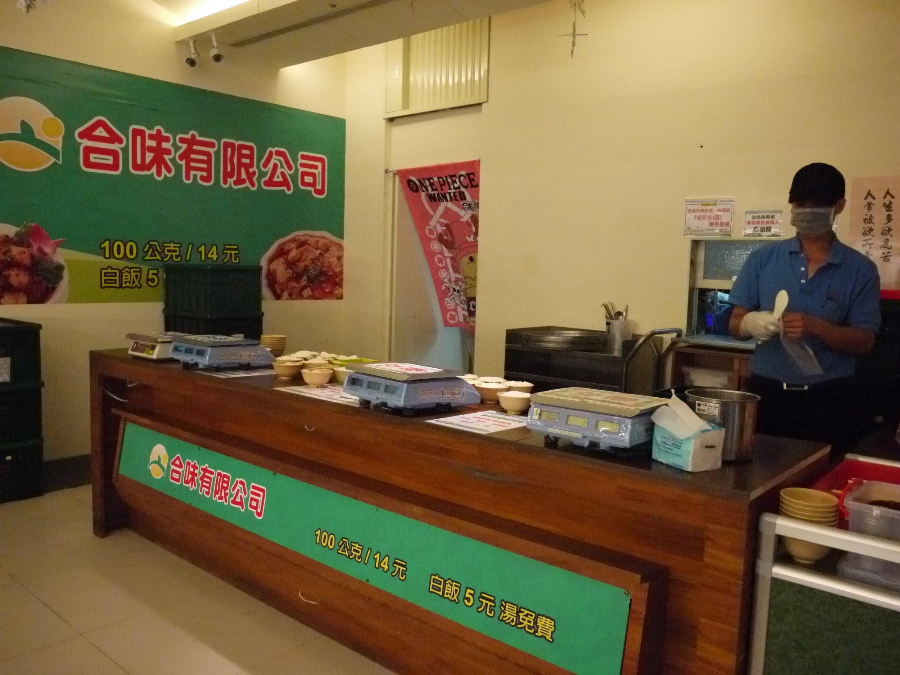

合味自助餐
四海遊龍 | 功夫茶 | 金盃美而美 | 食香園素食館李媽媽麵店 | 合味自助餐| 滷冰花養生滷味
- 本校營業地點位置 第一學生活動中心
- 餐飲業者名稱 合味自助餐
- 公司名稱 合味自助餐
- 營業時間及休息日
星期一~日 10:30~14:30（中餐） 16:30~19:40（晚餐） - 休息日：國定假日
- 聯絡電話 2365-1629
- 現場負責人：余幸娟
- 餐點特色：中式自助餐
- 本校折扣：無 (100公克15元)
- 業者簡介
台大店於2012年9月24日隆重開幕，餐點秤重計價100公克15元，另有多項特價餐點及水果供您選擇，並提供便當預訂服務。 除了目前的台大店外，尚有大同大學與黎明科技大學共三所大專院校的美食街自助餐，在桃園也配合多家知名電子科技廠。
餐廳業者參考照片
- 